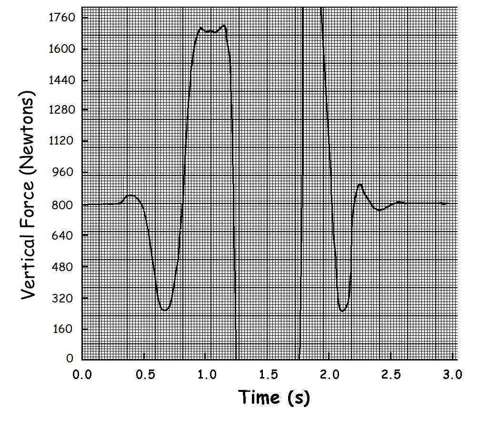
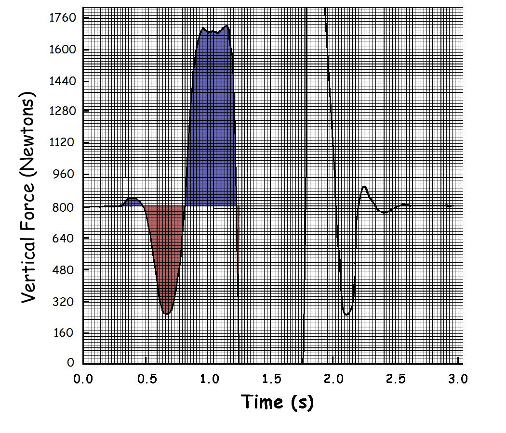
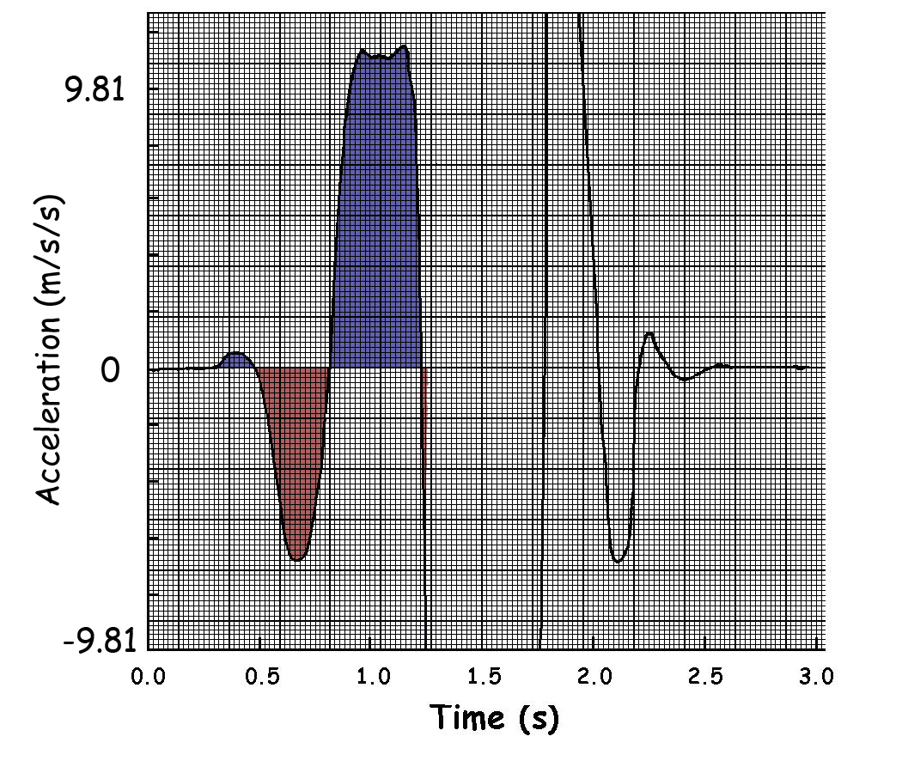

Impulse-Momentum Lab
Introduction:
The area under a force-time trace is a measure of the impulse or change in momentum of an object (see the "Impuse-Momentum Lectures" ). The graph below is a trace of the vertical force applied to the ground by a subject performing a vertical jump as measured by a force platform. You can calculate the vertical impulse of the jump by counting the squares as an estimate of the area. We know that impulse is equal to the change in momentum which will allow you to estimate the take-off velocity, height of the jump and the time in the air. You can also validate your calculations of the time in the air by using the graph.

The first step is to idetify the body weight line. In this case, the subject weighs 800 N. As the subject exerts a force against the ground that is different from his body weight, his center of mass accelerates. If the force is greater than his body weight, he has an upward acceleration and creates positive impulse which in turn indicates a positive change in momentum and a positive change in velocity. Conversely, if the force is less than his body weight, he has a downward acceleration, creates negative impulse, has a negative change in momentum and a negative change in velocity. The graph below indicates the positive area in blue and the negative area in red. You can estimate the area by counting the squares in each area and subtract the red squares from the blue squares to obtain the net impulse of the jump.

Calculations:
What is the net number of squares (blues squares minus red squares)?
How do you convert the area from squares to Newton-seconds?
Multiply the number of squares by the conversion factor to get the impulse of the jump.
Since impulse is a change of mometum and the subject started from rest, the impulse at take-off is equal to his mometum at take-off. Momentum is the product of mass and velocity so if we divide the momentum by his mass, we can estimate his take-off velocity.
What is the subject's mass?
What is his take-off velocity?
Once in the air, the subject is a projectile and you can calculate his maximum height and time in the air using the projectile equations from the "Projectile Lectures" ).
What is the maximum height of the jump?
What is the time in the air?
How does your calculation of the time in air compare to the measurement from the graph?
Which estimate is most likely correct?
Even if the area calculation of the area and impulse was exactly correct, the measured time in the air will be slightly greater than the calculation. Why?
Another way to look at the above calculations is to take the body weight line as zero and divide all the force values by mass to get acceleration using Newtons second law. The graph below is a trace of the vertical acceleration. We can see that when the jumper is at rest, his acceleration is zero. As he exerts forces against the ground that are different from his body weight he has positive accelerations when the force is greater than body weight and negative accelerations when the force is less than body weight. At the instant of take-off, the force drops to zero and his accelerations is -9.81 m/s/s. During the flight phase, his acceleration is a constant -9.81 m/s/s which is consistent with projectile motion. If we were to count squares and estimate the area under this acceleration-time curve, we would be integrating aceleration to yield velocity (see the "Calculus Lectures" ).

Find the time that corresponds to the jumper's...
- maximum upward velocity;
- maximum downward velocity of the counter movement;
- low point (deepest squat) of his center of mass.
Collisions (Conservation of Momentum):
Drop the medicine ball on the force plate and export the vertical force data. Calculate the impact velocity of the ball, the separation velocity of the ball, the time in the air, the coefficient of resititution, the maximum acceleration, and the energy absorbed by the impact (collision).